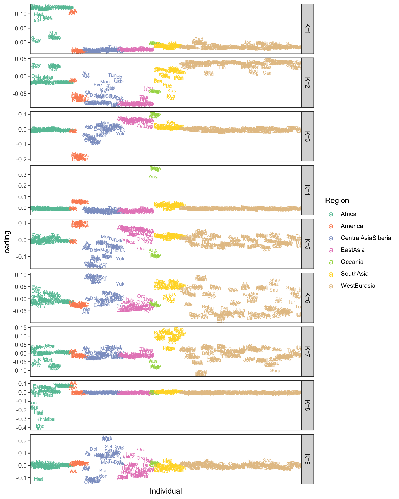

Non-Negative FLASH for visualizing Population Structure
jhmarcus
2019-02-11
Last updated: 2019-03-03
Checks: 5 1
Knit directory: drift-workflow/analysis/
This reproducible R Markdown analysis was created with workflowr (version 1.2.0). The Report tab describes the reproducibility checks that were applied when the results were created. The Past versions tab lists the development history.
Great! Since the R Markdown file has been committed to the Git repository, you know the exact version of the code that produced these results.
Great job! The global environment was empty. Objects defined in the global environment can affect the analysis in your R Markdown file in unknown ways. For reproduciblity it’s best to always run the code in an empty environment.
The command set.seed(20190211) was run prior to running the code in the R Markdown file. Setting a seed ensures that any results that rely on randomness, e.g. subsampling or permutations, are reproducible.
Great job! Recording the operating system, R version, and package versions is critical for reproducibility.
- flash-setup
- soft-setup
To ensure reproducibility of the results, delete the cache directory flash_cache and re-run the analysis. To have workflowr automatically delete the cache directory prior to building the file, set delete_cache = TRUE when running wflow_build() or wflow_publish().
Great! You are using Git for version control. Tracking code development and connecting the code version to the results is critical for reproducibility. The version displayed above was the version of the Git repository at the time these results were generated.
Note that you need to be careful to ensure that all relevant files for the analysis have been committed to Git prior to generating the results (you can use wflow_publish or wflow_git_commit). workflowr only checks the R Markdown file, but you know if there are other scripts or data files that it depends on. Below is the status of the Git repository when the results were generated:
Ignored files:
Ignored: .Rhistory
Ignored: analysis/.Rhistory
Ignored: analysis/flash_cache/
Ignored: data.tar.gz
Ignored: data/datasets/
Ignored: data/raw/
Ignored: output.tar.gz
Ignored: output/admixture/
Ignored: output/admixture_benchmark/
Ignored: output/flash_greedy/
Ignored: output/log/
Ignored: output/sim/
Untracked files:
Untracked: sandbox/admixture-benchmark.Rmd
Untracked: sandbox/sgdp.Rmd
Unstaged changes:
Deleted: analysis/admixture-benchmark.Rmd
Modified: code/viz.R
Modified: sandbox/hoa_weurasia.Rmd
Note that any generated files, e.g. HTML, png, CSS, etc., are not included in this status report because it is ok for generated content to have uncommitted changes.
These are the previous versions of the R Markdown and HTML files. If you’ve configured a remote Git repository (see ?wflow_git_remote), click on the hyperlinks in the table below to view them.
| File | Version | Author | Date | Message |
|---|---|---|---|---|
| Rmd | 90a0a02 | jhmarcus | 2019-02-28 | updated to autosomes and added manhatten plot |
| html | 90a0a02 | jhmarcus | 2019-02-28 | updated to autosomes and added manhatten plot |
| html | 38a461d | jhmarcus | 2019-02-24 | built all |
| html | 403bc6b | jhmarcus | 2019-02-15 | added hide code blocks |
| html | b4749ac | jhmarcus | 2019-02-15 | fixed some typos |
| html | 7a2b6c7 | jhmarcus | 2019-02-15 | added backfit |
| Rmd | f5ef1af | jhmarcus | 2019-02-15 | added workflows for human origins datasets |
| html | f5ef1af | jhmarcus | 2019-02-15 | added workflows for human origins datasets |
| Rmd | 31a16c6 | jhmarcus | 2019-02-14 | added hists of factors |
| html | 31a16c6 | jhmarcus | 2019-02-14 | added hists of factors |
| Rmd | 9538510 | jhmarcus | 2019-02-13 | switched to struct style plot |
| html | 9538510 | jhmarcus | 2019-02-13 | switched to struct style plot |
| Rmd | 63c2b75 | jhmarcus | 2019-02-13 | added softimpute |
| html | 63c2b75 | jhmarcus | 2019-02-13 | added softimpute |
| Rmd | 7b6ecbc | jhmarcus | 2019-02-12 | made fig size bigger |
| html | 7b6ecbc | jhmarcus | 2019-02-12 | made fig size bigger |
| Rmd | 5c0f91a | jhmarcus | 2019-02-12 | init flash proof of principle |
| html | 5c0f91a | jhmarcus | 2019-02-12 | init flash proof of principle |
Here I explore Matthew’s suggestion of applying a version of FLASH to visualize population structure. Let \(\mathbf{Y}\) be the \(n \times p\) genotype matrix where the rows are individuals and the columns are SNPs. The elements of this matrix \(y_{ij} \in \{0, 1, 2\}\) encode the count of an arbitrarily predefined allele for the diploid individual \(i\) and SNP \(j\). Here we imagine that the genotypes can be explained by \(K\) latent drift events. Each drift event effects the entire genome, i.e. all of the SNPs, but only a subset the individuals’ ancestors were in a “population” whom experienced the \(k\)th event. For instance, the ancestors of all Europeans experienced the “Out of Africa” drift event and the ancestors of North and South Americans crossed the Bering strait, undergoing a bottleneck. Here is a figure from a recent review (Nielson et al. 2017) that describes some of the major “drift events” in human history:
We assume the following matrix factorization model for the genotypes that can flexibly describe this kind of process:
\[ y_{ij} = \mu_j + \sum_{k=1}^K \ell_{ik} \delta_{jk} + e_{ij} \]
where \(\mu_j\) represents the mean genotype at the \(j\)th SNP (something like a mean allele frequency), \(\ell_{ik}\) represents a non-negative weight of the \(i\)th individual on the \(K\)th drift event, \(\delta_{jk}\) represents a deviance from the mean genotype which defines the drift event, and \(e_{ij} \sim N(0, \sigma^2)\) is a random error with variance \(\sigma^2\). Given the model I described above it would be natural for \(\boldsymbol{\ell}_k\) to be sparse, with different levels of sparsity for each \(k\) i.e. in a dataset of global Human diversity, all the non-African individuals experienced the “Out of Africa” drift event but only a subset of samples experienced the founding of Finland, or some population specific processes. Here we assume the following priors for the individual weights (loadings) and deviances (factors):
\[ \ell_{1k}, \dots, \ell_{nk} \overset{iid}{\sim} g_k, \quad g_k \in \mathcal{G}_+ \\ \delta_{jk} \overset{iid}{\sim} N(0, 1) \]
Briefly: where \(g_k\) is an adaptive shrinkage prior that is constrained to be in the family of unimodal and non-negative distributions \(\mathcal{G}_+\). The prior on the sample weights can be fit using flashier using an efficient approach that adapts to unknown sparsity using Empirical Bayes via solving iterative convex optimization problems. We assume the deviances come from a dense prior given that all SNPs are effected by the drift event. More can be expanded upon the model later, lets now explore a proof of principle with a real dataset using flashier.
Imports
Lets import some needed packages
library(ggplot2)
library(tidyr)
library(dplyr)
library(softImpute)
library(flashier)Functions
positive_structure_plot = function(gath_df, pops, K_, label_size=5){
p = ggplot(data=gath_df, aes(x=reorder(iid, desc(value)), y=value, fill=factor(K, levels=2:K_))) +
geom_bar(stat="identity", width=1) +
scale_fill_brewer(palette = "Set3") +
scale_y_continuous(expand=c(0, 0)) +
scale_x_discrete(expand=c(0, 0)) +
facet_grid(. ~ factor(clst, levels=pops), scales = "free", space="free", switch="both") +
theme_classic() +
theme(panel.spacing = unit(0.2, "lines"),
strip.background = element_rect(colour="white", fill="white"),
strip.text.x = element_text(size = label_size, colour = "black", angle = 90, hjust = 1.1),
strip.placement = "outside",
panel.grid.major = element_blank(),
panel.grid.minor = element_blank(),
axis.text.x=element_blank(),
axis.ticks.x=element_blank()) +
ylab("") +
xlab("") +
guides(fill=F)
return(p)
}Data
I prepared a dataset described in Lazaridis et al. 2016 which includes 2068 individuals and 621799 SNPs sampled from around the globe! This dataset is often referred to as the “Human Origins Array Dataset” (HoA) and is commonly used a reference panel to determine the ancestry of individuals from a new sample of human genetic variation. I removed all SNPs with allele frequency less than 5% and with sample missingness fraction greater than 1%. I then LD pruned the resulting genotype matrix using standard parameters in plink. This resulted in 167178 SNPs which will help us do some exploratory analysis more efficiently. First we read this filtered dataset:
X = t(lfa:::read.bed("../data/raw/NearEastPublic/HumanOriginsPublic2068_maf_geno_auto_ldprune"))[1] "reading in 2068 individuals"
[1] "reading in 165468 snps"
[1] "snp major mode"
[1] "reading snp 20000"
[1] "reading snp 40000"
[1] "reading snp 60000"
[1] "reading snp 80000"
[1] "reading snp 100000"
[1] "reading snp 120000"
[1] "reading snp 140000"
[1] "reading snp 160000"n = nrow(X)
p = ncol(X)
print(n)[1] 2068print(p)[1] 165468Next we read in some meta data that includes population and regional labels for each individual:
# read the meta data
meta_df = read.table("../data/raw/NearEastPublic/HumanOriginsPublic2068_clst.tsv", sep="\t")
colnames(meta_df) = c("iid", "clst")
head(meta_df) iid clst
1 SA1004 Khomani
2 SA063 Khomani
3 SA010 Khomani
4 SA064 Khomani
5 SA073 Khomani
6 SA1025 Khomani# read the clst data
clst_df = read.table("../data/raw/NearEastPublic/meta.tsv", sep="\t", header=TRUE)
clst_df$clst = clst_df$Simple.Population.ID
clst_df = clst_df %>% distinct(clst, .keep_all = TRUE)
head(clst_df) Simple.Population.ID Verbose.Population.ID Region Country Latitude
1 Ain_Touta_WGA Ain_Touta_WGA Africa Algeria 35.4
2 Algerian Algerian Africa Algeria 36.8
3 Mozabite Mozabite Africa Algeria 32
4 BantuSA Bantu_SA_Ovambo Africa Angola -19
5 Gana Gana Africa Botswana -21.7
6 Gui Gui Africa Botswana -21.5
Longitude Samples Passed.QC Contributor clst
1 5.9 3 0 Mark G. Thomas / Leila Laredj Ain_Touta_WGA
2 3 7 7 David Comas Algerian
3 3 27 21 Patterson et al. 2012 Mozabite
4 18 1 1 Patterson et al. 2012 BantuSA
5 23.4 9 8 Pickrell et al. 2012 and 2014 Gana
6 23.3 11 7 Pickrell et al. 2012 and 2014 GuiTo start lets sub-sample the genotype matrix so we have fewer individuals
set.seed(12345)
n_samples = 500
idx = sample(n, n_samples, replace = FALSE)
Y = X[idx, ]
m = nrow(Y)
p = ncol(Y)
print(m)[1] 500print(p)[1] 165468FLASH (flashier)
Next lets run greedy flashier on the resulting data matrix with a maximum of 10 factors:
K = 9 # the first factor is fixed
# to start we use point.normal not normal
flash_res = flashier(Y,
greedy.Kmax=K,
prior.type=c("nonnegative", "point.normal"),
var.type=0,
fix.dim=list(1),
fix.idx=list(1:m),
fix.vals=list(rep(1, m)))Initializing flash object...
Adding factor 1 to flash object...
Adding factor 2 to flash object...
Adding factor 3 to flash object...
Adding factor 4 to flash object...
Adding factor 5 to flash object...
Adding factor 6 to flash object...
Adding factor 7 to flash object...
Adding factor 8 to flash object...
Adding factor 9 to flash object...
Adding factor 10 to flash object...
Nullchecking 9 factors...
Wrapping up...
Done.
Warning: The above code chunk cached its results, but it won’t be re-run if previous chunks it depends on are updated. If you need to use caching, it is highly recommended to also set knitr::opts_chunk$set(autodep = TRUE) at the top of the file (in a chunk that is not cached). Alternatively, you can customize the option dependson for each individual chunk that is cached. Using either autodep or dependson will remove this warning. See the knitr cache options for more details.
It seems like the objective decreases in many of the factor fits (is this something to worry about). Lets now visualize the fitted flashier fit:
# setup loadings data.frame
l_df = as.data.frame(flash_res$loadings$normalized.loadings[[1]])
l_df$iid = as.vector(meta_df$iid[idx]) # individual ids
l_df$clst = meta_df$clst[idx] # population labels
l_df$lab = substr(l_df$clst, 1, 3) # shorthand for population labels
# join with the meta data
l_df = l_df %>% inner_join(clst_df, on="clst")
l_df = l_df %>% arrange(Region, clst) # sort by region then by population
l_df$iid = factor(l_df$iid, levels = l_df$iid) # make sure the ids are sorted
colnames(l_df)[1:(K+1)] = 1:(K+1)
# gather the data.frame for plotting
l_gath_df = l_df %>%
select(-Simple.Population.ID, -Verbose.Population.ID, -Country,
-Latitude, -Longitude, -Samples, -Passed.QC, -Contributor) %>%
gather(K, value, -iid, -clst, -lab, -Region) %>%
filter(K!=1)
#### viz #####
pops = unique(l_df$clst)
# Africa
africa_df = clst_df %>% filter(Region == "Africa", Simple.Population.ID %in% pops) %>% arrange(desc(Latitude))
africa_pops = africa_df$Simple.Population.ID
p_africa = positive_structure_plot(l_gath_df %>% filter(Region == "Africa"), africa_pops, 10, label_size=5)
# America
america_df = clst_df %>% filter(Region == "America", Simple.Population.ID %in% pops) %>% arrange(desc(Latitude))
america_pops = america_df$Simple.Population.ID
p_america = positive_structure_plot(l_gath_df %>% filter(Region == "America"), america_pops, 10, label_size=5)
# Central Asia Siberia
central_asia_siberia_df = clst_df %>% filter(Region == "CentralAsiaSiberia", Simple.Population.ID %in% pops) %>% arrange(desc(Latitude))
central_asia_siberia_pops = central_asia_siberia_df$Simple.Population.ID
p_central_asia_siberia = positive_structure_plot(l_gath_df %>% filter(Region == "CentralAsiaSiberia"), central_asia_siberia_pops, 10, label_size=5)
# East Asia
east_asia_df = clst_df %>% filter(Region == "EastAsia", Simple.Population.ID %in% pops) %>% arrange(desc(Latitude))
east_asia_pops = east_asia_df$Simple.Population.ID
p_east_asia = positive_structure_plot(l_gath_df %>% filter(Region == "EastAsia"), east_asia_pops, 10, label_size=5)
# South Asia
south_asia_df = clst_df %>% filter(Region == "SouthAsia", Simple.Population.ID %in% pops) %>% arrange(desc(Latitude))
south_asia_pops = south_asia_df$Simple.Population.ID
p_south_asia= positive_structure_plot(l_gath_df %>% filter(Region == "SouthAsia"), south_asia_pops, 10, label_size=5)
# West Eurasia
west_eurasia_df = clst_df %>% filter(Region == "WestEurasia", Simple.Population.ID %in% pops) %>% arrange(desc(Latitude))
west_eurasia_pops = west_eurasia_df$Simple.Population.ID
p_west_eurasia = positive_structure_plot(l_gath_df %>% filter(Region == "WestEurasia"), west_eurasia_pops, 10, label_size=5)
# Oceania
oceania_df = clst_df %>% filter(Region == "Oceania", Simple.Population.ID %in% pops) %>% arrange(desc(Latitude))
oceania_pops = oceania_df$Simple.Population.ID
p_oceania = positive_structure_plot(l_gath_df %>% filter(Region == "Oceania"), oceania_pops, 10, label_size=5)
p = cowplot::plot_grid(p_africa, p_west_eurasia, p_central_asia_siberia, p_america, p_east_asia, p_south_asia, p_oceania,
rel_heights = c(1.2, 1.3, 1, 1, 1, 1, 1.1),
nrow = 7, align = "v")
p
Here each row of the facet grid represents a different latent “drift event”. Each tick on the x-axis is a different individual. I represent each individual by a three letter short hand for the population label provided in the meta data. I then color each individual by a broad scale regional level label. There is much that can be improved in the visualization (which I like to think about more as its quite important) but I think this is a good starting place that helps reveal some patterns. Here are a couple observations:
- As one would hope (as I set it as an argument in
flashier) the 1st drift event is a constant value across the individuals - The 2nd drift event looks like it represents “Out of Africa”. Interestingly it picks up a number of American samples as being weighted on this event. If we look more closely they have the label “AA” which is shorthand for African American and as such these individuals carry African ancestry
- The 4th and 6th drift event looks like its related to the peopling of the Americas
- The 5th drift event seems to be related to the migration into Ocenia i.e. Australia / Papua New Guinea. This might be wishful thinking but its interesting to see the small weight of SouthAsian populations on this event.
TODO: describe more events
My impression is that this approach could be promising in building an interpretable visualization of population structure. Lets now visualize the factors … the question here is to see if FLASH estimated them to be sparse or not b/c I used a point normal prior on the deviances (not a normal distribution as described above):
# read factors
delta_df = as.data.frame(flash_res$loadings$normalized.loadings[[2]])
colnames(delta_df)[1:(K+1)] = 1:(K+1)
# gather the data.frame for plotting
delta_gath_df = delta_df %>%
gather(K, value) %>%
filter(K!=1)
# plot the factors
K_ = K + 1
p_fct = ggplot(delta_gath_df, aes(x=value, fill=factor(K, 2:K_))) +
scale_fill_brewer(palette = "Set3") +
geom_histogram() +
facet_wrap(~factor(K, levels=2:K_), scales = "free") +
labs(fill="K") +
theme_bw()
p_fct
Interestingly, some of the latent drift events seems be denser than others … so it seems the point.normal prior is doing some magic here. It will take some reading of the tea leaves to understand why some of the drift events are sparser than others. It seems like the later factors tend to be sparser. What I like about this plot is that it kind of serves a natural legend for the colors in the loadings plot.
PCA (softImpute)
Here we center and scale the columns and use softImpute to compute a PCA like solution in spite of missing data:
Z = biScale(Y, row.center=F, row.scale=F)
soft_res = softImpute(Z, rank.max=9, type="svd")
Warning: The above code chunk cached its results, but it won’t be re-run if previous chunks it depends on are updated. If you need to use caching, it is highly recommended to also set knitr::opts_chunk$set(autodep = TRUE) at the top of the file (in a chunk that is not cached). Alternatively, you can customize the option dependson for each individual chunk that is cached. Using either autodep or dependson will remove this warning. See the knitr cache options for more details.
Here we visualize the result:
# setup loadings data.frame
l_df = as.data.frame(soft_res$u)
l_df$iid = as.vector(meta_df$iid[idx]) # individual ids
l_df$clst = meta_df$clst[idx] # population labels
l_df$lab = substr(l_df$clst, 1, 3) # shorthand for population labels
# join with the meta data
l_df = l_df %>% inner_join(clst_df, on="clst")
l_df = l_df %>% arrange(Region, clst) # sort by region then by population
l_df$iid = factor(l_df$iid, levels = l_df$iid) # make sure the ids are sorted
colnames(l_df)[1:K] = paste0("K=", 1:K) # name the columns
# gather the data.frame for plotting
l_gath_df = l_df %>%
select(-Simple.Population.ID, -Verbose.Population.ID, -Country,
-Latitude, -Longitude, -Samples, -Passed.QC, -Contributor) %>%
gather(K, value, -iid, -clst, -lab, -Region)
# setup loadings data.frame
l_df = as.data.frame(soft_res$u)
l_df$iid = as.vector(meta_df$iid[idx]) # individual ids
l_df$clst = meta_df$clst[idx] # population labels
l_df$lab = substr(l_df$clst, 1, 3) # shorthand for population labels
# join with the meta data
l_df = l_df %>% inner_join(clst_df, on="clst")
l_df = l_df %>% arrange(Region, clst) # sort by region then by population
l_df$iid = factor(l_df$iid, levels = l_df$iid) # make sure the ids are sorted
colnames(l_df)[1:K] = paste0("K=", 1:K) # name the columns
# gather the data.frame for plotting
l_gath_df = l_df %>%
select(-Simple.Population.ID, -Verbose.Population.ID, -Country,
-Latitude, -Longitude, -Samples, -Passed.QC, -Contributor) %>%
gather(K, value, -iid, -clst, -lab, -Region)
# plot facet grid
p = ggplot(data=l_gath_df, aes(x=iid, y=value, label=lab, color=Region)) +
geom_text(size=2.5) +
scale_colour_brewer(palette = "Set2", guide=guide_legend(override.aes=list(size=4))) +
theme_bw() +
theme(axis.text.x=element_blank(), axis.ticks.x=element_blank()) +
theme(panel.grid.major = element_blank(), panel.grid.minor = element_blank()) +
facet_grid(factor(K, levels=paste0("K=", 1:9))~., scales="free_y") +
xlab("Individual") +
ylab("Loading")
p
softImpute’s solution looks pretty good and picks up similar patterns it seems, though its a bit harder to interpret negative / positive loadings and some of the drift events look denser which also makes interpretation trickier. I’m also now convinced by the power of the stacked bar plot (STRUCTURE plot)!
sessionInfo()R version 3.5.1 (2018-07-02)
Platform: x86_64-apple-darwin13.4.0 (64-bit)
Running under: macOS 10.14.2
Matrix products: default
BLAS/LAPACK: /Users/jhmarcus/miniconda3/lib/R/lib/libRblas.dylib
locale:
[1] en_US.UTF-8/en_US.UTF-8/en_US.UTF-8/C/en_US.UTF-8/en_US.UTF-8
attached base packages:
[1] stats graphics grDevices utils datasets methods base
other attached packages:
[1] flashier_0.1.0 softImpute_1.4 Matrix_1.2-15 dplyr_0.8.0.1
[5] tidyr_0.8.2 ggplot2_3.1.0
loaded via a namespace (and not attached):
[1] Rcpp_1.0.0 lfa_1.12.0 RColorBrewer_1.1-2
[4] compiler_3.5.1 pillar_1.3.1 git2r_0.23.0
[7] plyr_1.8.4 workflowr_1.2.0 tools_3.5.1
[10] digest_0.6.18 evaluate_0.12 tibble_2.0.1
[13] gtable_0.2.0 lattice_0.20-38 pkgconfig_2.0.2
[16] rlang_0.3.1 yaml_2.2.0 xfun_0.4
[19] withr_2.1.2 stringr_1.4.0 knitr_1.21
[22] fs_1.2.6 cowplot_0.9.4 rprojroot_1.3-2
[25] grid_3.5.1 tidyselect_0.2.5 glue_1.3.0
[28] R6_2.4.0 rmarkdown_1.11 reshape2_1.4.3
[31] corpcor_1.6.9 purrr_0.3.0 magrittr_1.5
[34] whisker_0.3-2 backports_1.1.3 scales_1.0.0
[37] htmltools_0.3.6 assertthat_0.2.0 colorspace_1.4-0
[40] labeling_0.3 stringi_1.2.4 lazyeval_0.2.1
[43] munsell_0.5.0 crayon_1.3.4